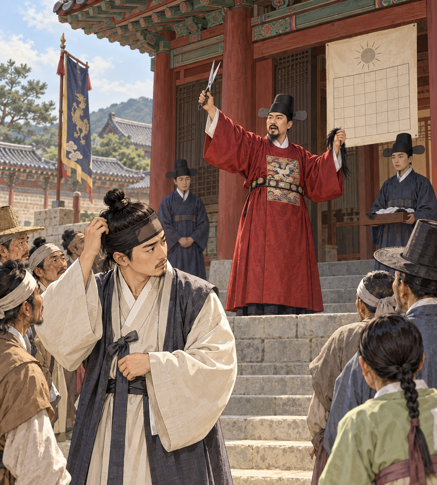
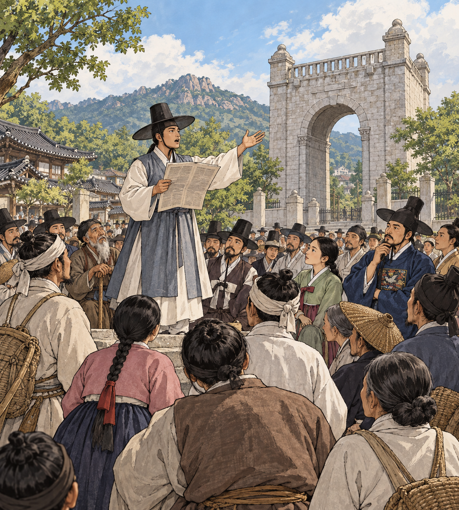
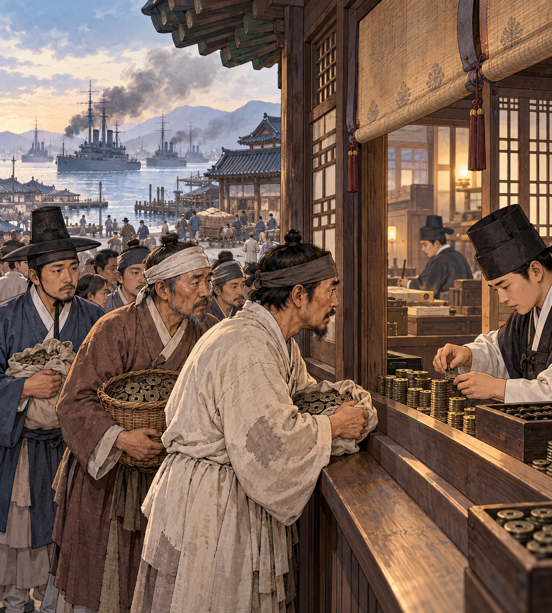
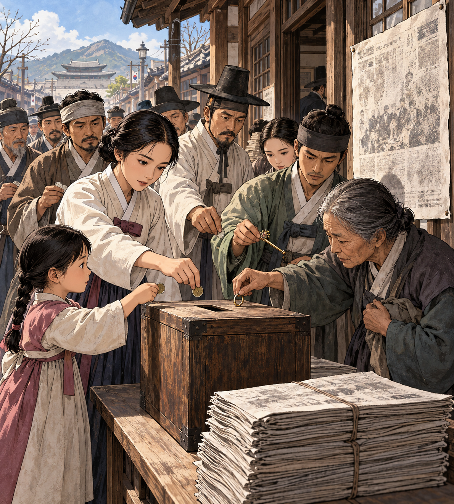

개항기와 대한제국
26대 고종 즉위와 흥선대원군 집권(1863)부터 27대 순종 때의 국권 피탈(1910)까지, 세 부분으로 따라가요.
- 세 부분 ① 나라를 바로잡자 · ② 나라를 개혁하자 · ③ 나라를 지키자. 주제로 나눈 묶음이라 시기가 조금씩 겹쳐요.
- 컷마다 왕·연도 → 그림 → 대화 → 배경 → 전개 → 결과를 읽어요.
- 흐름이 끊기는 곳마다 ‘이 부분에서 외울 것’으로 사람·사건을 이어서 정리해요.
① 나라를 바로잡자
안으로는 왕권을 세우고 밖으로는 서양을 막다가, 결국 일본에 나라 문을 열었다.
왕권을 다시 세우려는 개혁
26대 고종 · 흥선대원군 집권재위 1863–1907 · 흥선대원군 집권 1863–1873
1863 고종 즉위 · 흥선대원군 집권 · 경복궁 중건
개념 그림 · 실제 인물의 초상이나 현장 그림이 아니에요.
학습용 요약 대화 · 실제 발언을 그대로 옮긴 것이 아니에요.
흥선대원군고종의 아버지 · 실권자비변사의 힘을 줄이고 의정부와 삼군부를 되살려라.
신하정책 반응 보고 · 설명용 인물양반들이 호포제와 서원 정리에 크게 반발합니다.
- 배경세도 정치 아래 몇몇 가문이 비변사를 장악해 왕권이 약해져 있었다. 1863 어린 고종이 즉위하자 아버지 흥선대원군이 실권을 잡았다.
- 전개비변사의 기능을 줄이고 의정부와 삼군부를 되살렸다. 호포제로 양반에게도 군포를 걷고, 환곡 대신 사창제를 두었으며, 서원은 47곳만 남기고 정리했다.
- 결과왕권은 강해졌지만 양반과 유생의 반발이 커졌다.
- 경복궁임진왜란 때 불탄 경복궁을 다시 지으며 당백전을 발행해 물가가 크게 올랐다. 법전 대전회통도 펴냈다.
이 컷 핵심
- 흥선대원군 집권어린 26대 고종 대신 아버지 흥선대원군이 실권을 잡고 왕권을 다시 세우려 했다.
- 호포제 · 사창제 · 서원 정리양반에게도 군포를 걷고 환곡을 고쳤으며, 서원을 47곳만 남겨 양반·유생이 반발했다.
- 경복궁 중건 · 당백전경복궁을 다시 짓는 비용을 대려고 당백전을 찍어 물가가 크게 올랐다.
1866년, 병인양요
26대 고종 · 흥선대원군 집권기재위 1863–1907 · 흥선대원군 집권 1863–1873
1866 병인박해 · 제너럴셔먼호 사건 · 병인양요
개념 그림 · 실제 인물의 초상이나 현장 그림이 아니에요.
학습용 요약 대화 · 실제 발언을 그대로 옮긴 것이 아니에요.
양헌수정족산성 전투 지휘정족산성에서 프랑스군을 막아 내자!
한성근문수산성 전투 지휘문수산성에서도 맞서 싸우겠소.
- 배경1866 흥선대원군 정권이 천주교 신자와 프랑스 선교사들을 처형했다(병인박해).
- 같은 해평양에서는 대동강을 거슬러 온 미국 상선 제너럴셔먼호가 백성을 공격하자, 평안도 관찰사 박규수 등이 배를 불태웠다.
- 전개프랑스가 병인박해를 구실로 강화도를 침략했다(병인양요). 양헌수가 정족산성에서, 한성근이 문수산성에서 맞서 싸웠다.
- 결과프랑스군은 물러나면서 외규장각의 의궤 등 도서를 약탈해 갔다.
이 컷 핵심
- 병인양요 (1866 · 프랑스)천주교 탄압(병인박해)을 구실로 프랑스가 강화도를 침략한 사건이다.
- 양헌수 · 한성근양헌수는 정족산성에서, 한성근은 문수산성에서 프랑스군에 맞섰다.
- 외규장각프랑스군이 물러나며 외규장각의 의궤 등 도서를 약탈해 갔다.
1871년, 신미양요와 척화비
26대 고종 · 흥선대원군 집권기재위 1863–1907 · 흥선대원군 집권 1863–1873
1868 오페르트 도굴 사건 · 1871 신미양요 · 척화비
개념 그림 · 실제 인물의 초상이나 현장 그림이 아니에요.
그림: 앞 장면과 같은 양요 개념 그림을 다시 썼어요.
학습용 요약 대화 · 실제 발언을 그대로 옮긴 것이 아니에요.
어재연광성보 수비 지휘광성보를 끝까지 지켜라!
흥선대원군고종의 아버지 · 실권자서양과 화친하지 않겠다는 비석을 세워라.
- 배경1868 독일 상인 오페르트가 흥선대원군의 아버지 남연군의 묘를 도굴하려다 실패했다. 미국은 제너럴셔먼호 사건을 문제 삼았다.
- 전개1871 미국이 강화도를 침략했다(신미양요). 어재연이 광성보에서 싸웠고, 미국군은 어재연의 깃발(수자기)을 가져갔다.
- 결과미국군이 물러난 뒤 흥선대원군은 서양과 화친하지 않겠다는 척화비를 전국에 세웠다.
이 컷 핵심
- 신미양요 (1871 · 미국)제너럴셔먼호 사건을 문제 삼은 미국이 강화도를 침략한 사건이다.
- 어재연 · 광성보어재연이 광성보에서 미국군과 끝까지 싸웠다.
- 척화비두 양요를 겪은 흥선대원군이 서양과 화친하지 않겠다는 뜻으로 전국에 세웠다.
먼저 기억 · 사건 순서
병인박해 → 제너럴셔먼호 사건 → 병인양요(1866) → 오페르트 도굴 사건(1868) → 신미양요 → 척화비(1871). 앞글자로 ‘병제병오신척’.
1876년, 강화도 조약
26대 고종 · 직접 정치재위 1863–1907 · 직접 정치 1873–
1875 운요호 사건 · 1876 강화도 조약
개념 그림 · 실제 인물의 초상이나 현장 그림이 아니에요.
학습용 요약 대화 · 실제 발언을 그대로 옮긴 것이 아니에요.
구로다 기요타카일본 측 대표운요호 사건의 책임을 지고 조약을 맺으시오.
신헌조선 측 대표부산 말고도 원산과 인천까지 열어야 한단 말이오?
- 배경1875 일본 군함 운요호가 강화도 앞바다에서 충돌을 일으켰다(운요호 사건).
- 전개1876 이를 구실로 조일수호조규(강화도 조약)를 맺었다. 부산 외에 원산·인천을 열고, 일본이 조선 해안을 측량할 수 있게 했다.
- 결과우리나라가 외국과 맺은 첫 근대적 조약이자 불평등 조약이었다. 조약 뒤 김기수를 1차 수신사로 일본에 보냈다.
이 컷 핵심
- 강화도 조약 (1876)운요호 사건을 구실로 일본과 맺은 첫 근대적 조약이자 불평등 조약이다.
- 개항 · 해안 측량부산 외에 원산·인천을 열고, 일본이 조선 해안을 측량할 수 있게 했다.
선택 심화 · 부속 조약과 통상 장정
같은 해 조일수호조규 부록(개항장 10리 안 일본인 활동·일본 화폐 사용)과 조일무역규칙(양곡 유출 허용·무관세)을 맺었다. 1883 조일통상장정으로 관세와 방곡령 규정이 들어갔고, 1889 함경도·황해도에서 방곡령을 내렸다.
② 나라를 개혁하자
나라 문을 연 뒤, 어떻게 바꿀지를 두고 여러 세력이 차례로 나섰다.
개화 정책과 위정척사
26대 고종재위 1863–1907
1880 통리기무아문 · 1881 별기군 · 조사 시찰단 · 영선사 · 영남 만인소
개념 그림 · 실제 인물의 초상이나 현장 그림이 아니에요.
학습용 요약 대화 · 실제 발언을 그대로 옮긴 것이 아니에요.
개화 관리개화 정책 설명 · 설명용 인물통리기무아문을 두고 신식 군대 별기군을 만들었소.
이만손영남 만인소를 올린 유생성리학 질서를 지키자! 미국과의 수교에 반대합니다.
- 배경강화도 조약으로 나라 문이 열리자 새 제도와 기술을 배울 필요가 커졌다.
- 전개통리기무아문과 12사를 두어 개화 정책을 총괄하고, 5군영을 2영으로 줄이며 신식 군대 별기군을 만들었다. 일본에 수신사와 조사 시찰단을, 청에 영선사를 보냈다(돌아와 기기창 설립).
- 결과성리학 질서를 지키려는 위정척사 운동이 맞섰다. 1881 이만손 등은 영남 만인소로 조선책략과 미국 수교 논의에 반대했다.
- 앞서최익현은 1876 강화도 조약 때 왜양일체론을 내세워 조약에 반대했다.
이 컷 핵심
- 통리기무아문 · 별기군개화 정책을 총괄할 기구를 두고, 신식 군대 별기군을 만들었다.
- 영선사 · 기기창청에 유학생과 기술자를 보냈고, 돌아와 무기 공장 기기창을 세웠다.
- 위정척사 · 영남 만인소성리학 질서를 지키려는 유생들이 개화 정책과 미국 수교 논의에 반대했다.
1882년, 조미수호통상조약
26대 고종재위 1863–1907
1882 조미수호통상조약 · 보빙사
개념 그림 · 실제 인물의 초상이나 현장 그림이 아니에요.
그림: 강화도 조약 장면과 같은 조약 체결 개념 그림을 다시 썼어요.
학습용 요약 대화 · 실제 발언을 그대로 옮긴 것이 아니에요.
신헌조선 측 대표다른 나라에 준 유리한 조건을 미국에도 똑같이 준다는 말이오?
슈펠트미국 측 대표그렇소. 관세를 인정하고, 다른 나라와 분쟁이 생기면 조정에 나서기로 합시다.
- 배경1880 2차 수신사 김홍집이 가져온 조선책략은 러시아를 막으려면 청과 친하고, 일본과 맺고, 미국과 연합하라고 권했다.
- 전개1882 서양 나라와 처음으로 조미수호통상조약을 맺었다. 최혜국 대우를 처음 규정하고, 처음으로 관세를 인정했으며, 거중 조정 조항(다른 나라와 분쟁이 생기면 조정·중재에 나섬)을 넣었다.
- 결과조약 뒤 미국에 보빙사를 보냈다. 이어 영국·독일·러시아 등과도 조약을 맺었다.
이 컷 핵심
- 조미수호통상조약 (1882)조선책략을 계기로 서양 나라와 처음 맺은 조약이다.
- 최혜국 대우 · 관세남에게 준 유리한 조건을 미국에도 주는 조항이 처음 들어갔고, 관세도 처음 인정했다.
- 거중 조정다른 나라와 분쟁이 생기면 조정·중재에 나선다는 조항이다.
흐름 보충 · 프랑스와의 조약
프랑스와는 다른 나라보다 늦게(1886) 조약을 맺었고, 천주교 포교를 인정했다.
1882년, 구식 군인의 봉기
26대 고종재위 1863–1907
1882 임오군란 → 제물포 조약 · 조청상민수륙무역장정
개념 그림 · 실제 인물의 초상이나 현장 그림이 아니에요.
학습용 요약 대화 · 실제 발언을 그대로 옮긴 것이 아니에요.
구식 군인봉기에 나선 군인 · 설명용 인물열석 달 밀린 급료라며 준 쌀에 모래가 섞였다!
관리결과 보고 · 설명용 인물청군이 들어와 진압하고 흥선대원군을 청으로 데려갔습니다.
- 배경신식 군대 별기군과 달리 구식 군인은 차별받았고, 13개월이나 밀린 급료로 받은 쌀에는 모래와 겨가 섞여 있었다.
- 전개1882 구식 군인이 들고일어나 별기군 일본인 교관을 죽이고 일본 공사관을 습격했다. 청군이 들어와 진압했다.
- 결과청은 마젠창과 묄렌도르프를 보내 내정에 간섭했다. 일본과는 제물포 조약(공사관 경비 일본군 주둔)을, 청과는 조청상민수륙무역장정(청 상인의 한성 상점 개설)을 맺었다.
이 컷 핵심
- 임오군란 (1882)차별받던 구식 군인이 일으킨 봉기를 청군이 들어와 진압했다.
- 제물포 조약 · 조청상민수륙무역장정일본과는 공사관 경비군 주둔을, 청과는 청 상인의 상점 개설을 허용하는 조약을 맺었다.
1884년, 3일 만에 끝난 정변
26대 고종재위 1863–1907
1884 갑신정변 → 한성 조약 · 1885 톈진 조약
개념 그림 · 실제 인물의 초상이나 현장 그림이 아니에요.
학습용 요약 대화 · 실제 발언을 그대로 옮긴 것이 아니에요.
김옥균급진 개화파우정총국 개국 축하연에서 일을 일으킵시다.
동료 개화파걱정을 말함 · 설명용 인물청군이 개입하면 버티기 어렵소.
- 배경임오군란 뒤 청의 간섭이 심해지자, 김옥균·홍영식 등 급진 개화파는 일본처럼 빠른 개혁을 원했다.
- 전개1884 우정총국 개국 축하연에서 정변을 일으켰지만, 청군이 개입해 3일 만에 실패했다.
- 결과일본과는 한성 조약(배상)을, 청과 일본은 1885 톈진 조약(조선에 군대를 보낼 때 서로 알리기)을 맺었다.
- 그 뒤1885–1887 영국이 러시아를 견제하려 거문도를 불법 점령했다(거문도 사건). 이 무렵 유길준 등은 조선 중립화론을 내놓았다.
이 컷 핵심
- 갑신정변 · 김옥균급진 개화파가 우정총국 개국 축하연에서 일으킨 정변으로, 청군의 개입으로 3일 만에 실패했다.
- 한성 조약 · 톈진 조약일본에는 배상을 하고, 청과 일본은 조선에 군대를 보낼 때 서로 알리기로 했다.
먼저 기억 · 끝난 뒤 맺은 조약
임오군란 → 제물포 조약(일본) · 조청상민수륙무역장정(청) / 갑신정변 → 한성 조약(일본) · 톈진 조약(청·일).
1894년, 고부에서 전주성까지
26대 고종재위 1863–1907
1894 고부 봉기 → 1차 봉기(황토현·황룡촌) → 전주성 점령 → 전주 화약·집강소
개념 그림 · 실제 인물의 초상이나 현장 그림이 아니에요.
학습용 요약 대화 · 실제 발언을 그대로 옮긴 것이 아니에요.
전봉준동학 농민군 지도자나라를 돕고 백성을 편안하게 하자!
농민농민군 참여자 · 설명용 인물황토현에 이어 황룡촌에서도 이겼소!
- 배경1860 최제우가 창시한 동학이 퍼져 있었다. 1894 고부 군수 조병갑의 수탈에 맞서 전봉준 등이 봉기했고, 조사하러 온 안핵사 이용태가 오히려 농민을 탄압했다.
- 전개1차 봉기에서 보국안민·제폭구민을 내세워 황토현·황룡촌 전투에서 이기고 전주성을 점령했다.
- 결과정부와 전주 화약을 맺고, 전라도 곳곳에 자치 기구 집강소를 두어 폐정 개혁을 실천했다.
이 컷 핵심
- 고부 봉기 · 전봉준고부 군수 조병갑의 수탈에 맞서 전봉준 등이 들고일어났다.
- 황토현 · 황룡촌1차 봉기에서 관군을 이기고 전주성까지 점령했다.
- 전주 화약 · 집강소정부와 화약을 맺고, 농민군이 전라도 곳곳에 자치 기구 집강소를 두었다.
일본군이 궁궐을 차지하다
26대 고종재위 1863–1907
1894 일본군의 경복궁 점령 → 청일 전쟁
개념 그림 · 실제 인물의 초상이나 현장 그림이 아니에요.
학습용 요약 대화 · 실제 발언을 그대로 옮긴 것이 아니에요.
관리상황 보고 · 설명용 인물일본군이 경복궁을 점령했습니다!
다른 관리앞일 설명 · 설명용 인물곧 청과 일본이 이 땅에서 전쟁을 벌일 것이오.
- 배경농민군이 전주성을 점령하자 정부는 청에 군대를 요청했고, 일본도 갑신정변 뒤 맺은 톈진 조약을 구실로 군대를 보냈다.
- 전개일본군이 경복궁을 점령하고 청일 전쟁을 일으켰다.
- 결과일본의 영향 아래 군국기무처가 개혁을 시작했고, 농민군은 외세를 몰아내려 다시 일어날 준비를 했다.
이 컷 핵심
- 경복궁 점령 · 청일 전쟁농민군의 전주성 점령 뒤 청·일이 군대를 보냈고, 일본군이 궁궐을 차지한 뒤 청과 전쟁을 벌였다.
- 개혁과 2차 봉기로 이어짐일본의 영향 아래 개혁이 시작되었고, 외세 간섭에 맞서 농민군은 다시 일어날 준비를 했다.
군국기무처의 1차 갑오개혁
26대 고종재위 1863–1907
1894 군국기무처 · 1차 갑오개혁
개념 그림 · 실제 인물의 초상이나 현장 그림이 아니에요.
그림: 개화 정책 장면과 같은 조정 회의 개념 그림을 다시 썼어요.
학습용 요약 대화 · 실제 발언을 그대로 옮긴 것이 아니에요.
관리개혁 논의 · 설명용 인물갑신정변의 요구와 농민군의 개혁안까지 모아 개혁합시다.
다른 관리개혁 논의 · 설명용 인물과거제와 공사 노비제부터 없애야 하오.
- 배경경복궁 점령 뒤 군국기무처가 개혁을 맡았다. 갑신정변의 요구와 농민군의 폐정 개혁안 등이 반영되었다.
- 전개과거제를 없애고 공사 노비제를 폐지했으며, 과부 재가 금지·연좌제 같은 옛 관습도 없앴다.
- 관제6조를 8아문으로 바꾸었다.
이 컷 핵심
- 군국기무처1차 갑오개혁을 이끈 기구로, 갑신정변과 농민군의 개혁 요구도 반영했다.
- 과거제 폐지 · 공사 노비제 폐지과거 시험과 신분에 따른 노비 제도를 없앤 것이 1차 개혁의 핵심이다.
우금치에서 멈춘 농민군
26대 고종재위 1863–1907
1894 2차 봉기 → 논산 합류 → 우금치 전투 → 전봉준 체포
개념 그림 · 실제 인물의 초상이나 현장 그림이 아니에요.
그림: 1차 봉기 장면과 같은 농민군 개념 그림을 다시 썼어요.
학습용 요약 대화 · 실제 발언을 그대로 옮긴 것이 아니에요.
농민군2차 봉기 참여자 · 설명용 인물이번에는 일본을 몰아내자!
다른 농민군2차 봉기 참여자 · 설명용 인물남접과 북접이 논산에서 합쳤소.
- 배경일본군의 경복궁 점령과 청일 전쟁으로 외세의 간섭이 커졌다.
- 전개농민군이 다시 일어나(2차 봉기) 남접과 북접이 논산에서 합류해 북상했다.
- 결과공주 우금치 전투에서 일본군과 관군에 패했고, 전봉준이 체포되면서 동학 농민 운동은 끝났다.
이 컷 핵심
- 2차 봉기 · 우금치외세를 몰아내려 다시 일어난 농민군이 공주 우금치에서 일본군과 관군에 패했다.
- 전봉준 체포지도자 전봉준이 붙잡히면서 동학 농민 운동이 끝났다.
홍범 14조와 교육 입국 조서
26대 고종재위 1863–1907
1894–1895 홍범 14조 · 교육 입국 조서 · 23부
개념 그림 · 실제 인물의 초상이나 현장 그림이 아니에요.
학습용 요약 대화 · 실제 발언을 그대로 옮긴 것이 아니에요.
고종조선의 국왕 · 홍범 14조 반포청에서 독립한 나라임을 밝히고 홍범 14조를 반포하노라.
관리개혁 실행 보고 · 설명용 인물학교를 세우고, 8도를 23부로 고치겠습니다.
- 배경청일 전쟁에서 일본이 우세해지자 김홍집·박영효 연립 내각이 개혁을 이어 갔다.
- 전개고종이 종묘에서 독립 서고문을 바치고 홍범 14조를 반포했다. 교육 입국 조서를 내려 한성 사범 학교 등 근대 학교를 세웠다.
- 행정8도를 23부로 바꾸고, 근대적 재판소를 두었다.
이 컷 핵심
- 홍범 14조고종이 청에서 독립한 나라임을 밝히며 반포한 2차 갑오개혁의 방향이다.
- 교육 입국 조서근대 교육을 선언해 한성 사범 학교 같은 근대 학교를 세우게 했다.
- 23부 · 재판소8도를 23부로 바꾸고, 근대적 재판소를 두었다.
먼저 기억 · 1차와 2차 가르기
1차 = 군국기무처 · 과거제·공사 노비제 폐지 / 2차 = 홍범 14조 · 교육 입국 조서 · 23부 · 재판소. 강의는 군국기무처와 공사 노비제 폐지를 먼저 외우라고 했다.
1895년, 을미사변과 단발령
26대 고종재위 1863–1907
1895 삼국 간섭 · 을미사변 · 을미개혁 → 1896 아관 파천

개념 그림 · 실제 인물의 초상이나 현장 그림이 아니에요.
학습용 요약 대화 · 실제 발언을 그대로 옮긴 것이 아니에요.
관리단발령 알림 · 설명용 인물단발령이 내려졌으니 상투를 자르시오.
선비단발령에 반발 · 설명용 인물부모에게 받은 머리털을 자를 수는 없소!
- 배경청일 전쟁 뒤 러시아·프랑스·독일의 삼국 간섭으로 일본이 요동반도를 돌려주자, 명성 왕후 쪽은 러시아와 가까워졌다.
- 전개1895 일본이 명성 왕후를 시해했다(을미사변). 이어 을미개혁으로 단발령을 내리고 태양력을 쓰며 친위대·진위대를 두었고, 건양 연호를 정했다(1896년부터 사용).
- 결과을미사변과 단발령에 반발한 을미의병이 일어났다. 1896 고종이 러시아 공사관으로 옮기면서(아관 파천) 을미개혁은 중단되었다.
이 컷 핵심
- 을미사변삼국 간섭 뒤 러시아와 가까워진 명성 왕후를 일본이 시해했다.
- 을미개혁단발령을 내리고 태양력을 쓰며, 건양 연호를 정하고 친위대·진위대를 두었다.
- 을미의병 · 아관 파천단발령에 반발한 의병이 일어났고, 고종이 러시아 공사관으로 옮기며 개혁이 멈췄다.
독립신문과 만민 공동회
26대 고종재위 1863–1907
1896 독립신문 발행 · 독립협회 창립 · 독립문 건립 추진

개념 그림 · 실제 인물의 초상이나 현장 그림이 아니에요.
학습용 요약 대화 · 실제 발언을 그대로 옮긴 것이 아니에요.
서재필독립신문 발행독립신문을 내고, 독립문 건립도 추진합시다.
시민공동회 참가자 · 설명용 인물관민 공동회에서 헌의 6조를 결의했소!
- 배경아관 파천 뒤 러시아 등 열강의 이권 요구가 커졌다.
- 전개1896 서재필이 독립신문을 발행했다. 같은 해 서재필 등이 독립협회를 창립해 독립문 건립을 추진했고, 러시아의 절영도 조차 요구에 반대했다.
- 결과1898 만민 공동회를 열고, 관민 공동회에서 헌의 6조를 결의했다. 중추원을 의회로 바꾸려 했지만, 고종은 황국협회를 동원해 독립협회를 해산시켰다.
이 컷 핵심
- 독립신문 · 독립협회서재필이 독립신문을 먼저 냈고, 같은 해 독립협회가 창립되어 독립문 건립을 추진했다.
- 관민 공동회 · 헌의 6조관리도 참여한 관민 공동회에서 개혁안 헌의 6조를 결의했다.
- 독립협회 해산고종이 황국협회를 동원해 독립협회를 해산시켰다.
1897년, 황제의 나라
26대 고종 · 대한제국 황제재위 1863–1907 · 황제 1897–1907
1897 대한제국 선포 · 환구단 황제 즉위 · 1899 대한국 국제 · 광무개혁
주제별 정리 · 독립협회와 같은 시기의 다른 흐름이에요. 앞 장면의 1898년보다 이른 1897년으로 시간이 돌아가요.
개념 그림 · 실제 인물의 초상이나 현장 그림이 아니에요.
학습용 요약 대화 · 실제 발언을 그대로 옮긴 것이 아니에요.
고종대한제국 황제환구단에서 황제로 즉위하고, 나라 이름을 대한제국이라 하노라.
관리개혁 실행 보고 · 설명용 인물구본신참에 따라 원수부를 두고 지계를 발급하겠습니다.
- 배경1897 고종이 러시아 공사관에서 경운궁으로 돌아왔다.
- 전개환구단에서 황제로 즉위해 국호를 대한제국, 연호를 광무로 정했다(1863년 왕위 즉위와 다른, 황제 즉위). 1899 대한국 국제로 황제권을 밝혔다.
- 광무개혁구본신참(옛것을 바탕으로 새것을 받아들임)을 내세워 황제 직속 최고 군사 기구인 원수부를 두어 황제가 군을 통솔하고, 양전 사업으로 토지를 재어 지계(근대적 토지 소유 증명서)를 발급했다.
- 같은 때1898 황국 중앙 총상회가 상권 수호에 나섰고, 1899 전차와 경인선 철도가 개통되었다.
이 컷 핵심
- 대한제국 · 환구단고종이 환구단에서 황제로 즉위하고 국호를 대한제국, 연호를 광무로 정했다.
- 광무개혁 · 구본신참옛것을 바탕으로 새것을 받아들인다는 원칙으로 최고 군사 기구 원수부를 두고 지계를 발급했다.
선택 심화 · 용암포 사건
1903 러시아가 압록강 하구의 용암포를 빌리려다 일본의 반대로 무산되었고, 러시아와 일본의 사이가 더 나빠졌다.
신문·학교·병원·전차
26대 고종 → 27대 순종여러 왕 대에 걸친 정리 · 고종 재위 1863–1907 · 순종 재위 1907–1910
여러 해에 걸친 정리 · 신문 · 학교 · 병원 · 교통
개념 그림 · 실제 인물의 초상이나 현장 그림이 아니에요.
그림: 대한제국 장면과 같은 그림(서양식 건물·전신주·기차)을 근대 시설 개념 그림으로 다시 썼어요.
학습용 요약 대화 · 실제 발언을 그대로 옮긴 것이 아니에요.
기자신문 소개 · 설명용 인물박문국에서 첫 근대 신문 한성순보를 냈소.
학생학교·교통 소개 · 설명용 인물원산학사와 육영공원이 생겼고, 전차도 달려요.
- 신문한성순보(1883 · 순한문 · 열흘마다) → 한성주보(국한문 · 첫 상업 광고) → 독립신문(서재필 · 한글판·영문판) → 황성신문(국한문)·제국신문(순한글) → 대한매일신보(양기탁·베델)
- 학교원산학사(1883 첫 근대 학교) · 육영공원(관립, 헐버트 등 외국인 교사) · 2차 갑오개혁 때 교육 입국 조서로 관립 학교 설립
- 병원·통신광혜원 → 제중원(알렌) · 우정총국(1884) · 전신
- 교통·건물1899 전차·경인선 개통 · 1905 경부선 · 명동 성당(1898) · 원각사 · 덕수궁 석조전(1910)
이 컷 핵심
- 박문국 · 한성순보정부 기관 박문국이 우리나라 첫 근대 신문 한성순보를 냈다.
- 원산학사 · 육영공원원산학사는 첫 근대 학교이고, 육영공원은 헐버트 등 외국인이 가르친 관립 학교다.
- 전차 · 경인선1899 서울에 전차가 달리고, 첫 철도인 경인선이 개통되었다.
선택 심화 · 종교와 국학
손병희가 동학을 천도교로 개편하고 만세보를 냈다. 나철은 대종교를, 박은식은 유교 구신론을, 한용운은 조선 불교 유신론을 내세웠다. 주시경은 국문 연구소에서 한글을 연구했고, 신채호는 대한매일신보에 독사신론을 연재했다.
선택 심화 · 인물
박규수(제너럴셔먼호 때 평안도 관찰사) · 김홍집(조선책략 · 갑오개혁 · 아관 파천 때 피살) · 유길준(서유견문 · 중립화론) · 헐버트(육영공원 교사 · 헤이그 특사를 도움) · 베델(대한매일신보)
③ 나라를 지키자
러일 전쟁 뒤 일본이 외교권·군대·사법권·경찰권을 차례로 빼앗아 1910년 나라를 잃었다.
1904년, 고문 정치가 시작되다
26대 고종 · 대한제국 황제재위 1863–1907 · 황제 1897–1907
1904 러일 전쟁 · 한일 의정서 · 제1차 한일 협약 → 1905 화폐 정리 사업

개념 그림 · 실제 인물의 초상이나 현장 그림이 아니에요.
학습용 요약 대화 · 실제 발언을 그대로 옮긴 것이 아니에요.
대한제국 관리상황 설명 · 설명용 인물중립을 선언했는데도 일본군이 들어왔소.
상인화폐 정리 피해 · 설명용 인물가진 백동화를 제값에 바꿔 주지 않는다니!
- 배경용암포 문제 등으로 맞서던 러시아와 일본 사이에 1904 러일 전쟁이 일어났다. 대한제국은 중립을 선언했다.
- 전개일본은 한일 의정서로 군사 기지로 쓸 땅을 차지하고, 제1차 한일 협약으로 고문 정치를 시작했다(외교 고문 스티븐스, 재정 고문 메가타).
- 결과메가타의 화폐 정리 사업(1905)으로 백동화 등을 제일은행권으로 바꾸면서 한국 상인들이 큰 피해를 입었다.
- 같은 때1904 보안회가 일본의 황무지 개간권 요구를 막아 냈다. 1905 일본은 독도를 불법 편입했다.
이 컷 핵심
- 한일 의정서러일 전쟁 중 일본이 군사 기지로 쓸 땅을 차지할 수 있게 했다.
- 제1차 한일 협약 · 고문 정치일본이 추천한 외교 고문 스티븐스와 재정 고문 메가타가 내정에 간섭했다.
- 화폐 정리 사업메가타가 백동화 등을 제일은행권으로 바꾸게 해 한국 상인이 큰 피해를 입었다.
1905년, 외교권을 빼앗기다
26대 고종 · 대한제국 황제재위 1863–1907 · 황제 1897–1907
1905 을사늑약 → 1906 통감부
개념 그림 · 실제 인물의 초상이나 현장 그림이 아니에요.
학습용 요약 대화 · 실제 발언을 그대로 옮긴 것이 아니에요.
이토 히로부미일본 측 · 조약 강요이제 외교는 통감부가 맡는다.
고종대한제국 황제나는 국새를 찍지 않았으니 무효요!
- 배경러일 전쟁에서 이긴 일본이 대한제국의 외교권을 노렸다.
- 전개1905 을사늑약으로 외교권을 빼앗고, 1906 통감부를 두었다(초대 통감 이토 히로부미). 고종은 국새를 찍지 않았다며 무효를 주장했다.
- 결과민영환은 자결하고, 장지연은 황성신문에 시일야방성대곡을 실었다. 신돌석·최익현 등이 을사의병을 일으켰다.
이 컷 핵심
- 을사늑약 · 외교권러일 전쟁에서 이긴 일본이 대한제국의 외교권을 빼앗았다.
- 통감부을사늑약 뒤 설치되어 초대 통감 이토 히로부미가 대한제국을 간섭했다.
- 시일야방성대곡 · 을사의병장지연은 늑약을 비판하는 논설을 싣고, 신돌석·최익현 등은 의병을 일으켰다.
1907년, 군대가 해산되다
26대 고종 → 27대 순종고종 재위 1863–1907 · 순종 재위 1907–1910
1907 헤이그 특사 → 고종 강제 퇴위·순종 즉위 → 정미 7조약·군대 해산 → 1908 서울 진공 작전
개념 그림 · 실제 인물의 초상이나 현장 그림이 아니에요.
학습용 요약 대화 · 실제 발언을 그대로 옮긴 것이 아니에요.
해산 군인의병에 합류 · 설명용 인물군대가 해산되어도 총을 놓지 않겠다!
이인영13도 창의군 총대장13도 창의군을 이루어 서울로 나아갑시다.
- 배경고종이 을사늑약의 무효를 알리려 헤이그 만국 평화 회의에 특사를 보냈다.
- 전개일본은 이를 구실로 1907 고종을 강제로 물러나게 했고, 27대 순종이 즉위했다. 이어 한일 신협약(정미 7조약)으로 차관을 일본인으로 채우고 대한제국 군대를 해산했다.
- 결과해산된 군인이 합류한 정미의병이 13도 창의군을 이뤄 1908 서울 진공 작전을 벌였지만 패했고, 1909 이른바 남한 대토벌로 크게 약해졌다.
이 컷 핵심
- 헤이그 특사 → 고종 강제 퇴위을사늑약의 무효를 알리려 한 특사를 구실로 일본이 고종을 물러나게 했고, 27대 순종이 즉위했다.
- 정미 7조약 · 군대 해산차관을 일본인으로 채우고 대한제국 군대를 해산했다.
- 정미의병 · 13도 창의군해산 군인이 합류해 의병이 커졌고, 13도 창의군이 서울 진공 작전을 벌였다.
1910년, 나라를 빼앗기다
27대 순종재위 1907–1910
1909 기유각서 → 1910 경찰권 위탁 → 1910 국권 피탈
개념 그림 · 실제 인물의 초상이나 현장 그림이 아니에요.
그림: 을사늑약 장면과 같은 강요된 조약 개념 그림을 다시 썼어요.
학습용 요약 대화 · 실제 발언을 그대로 옮긴 것이 아니에요.
관리상황 설명 · 설명용 인물사법권에 이어 경찰권까지 넘겨주라는 말이오?
다른 관리결과 설명 · 설명용 인물결국 나라의 주권까지 빼앗겼소.
- 배경정미 7조약 뒤 일본이 대한제국의 행정을 장악해 갔다.
- 전개1909 기유각서로 사법권과 감옥 사무를, 1910 경찰권을 빼앗았다.
- 결과1910 한국 병합 조약으로 국권을 빼앗겼다(국권 피탈). 조선 왕조와 대한제국의 역사가 끝났다.
- 같은 때1908 장인환·전명운이 스티븐스를, 1909 안중근이 하얼빈에서 이토 히로부미를 처단했다(안중근은 감옥에서 동양평화론을 썼다).
이 컷 핵심
- 기유각서 · 경찰권사법권과 감옥 사무에 이어 경찰권까지 차례로 빼앗겼다.
- 국권 피탈한국 병합 조약으로 대한제국이 나라를 잃었다.
빚을 갚고, 사람을 키우고
26대 고종 → 27대 순종여러 왕 대에 걸친 정리 · 고종 재위 1863–1907 · 순종 재위 1907–1910
여러 해에 걸친 정리 · 보안회 · 국채보상운동 · 대한자강회 · 신민회

개념 그림 · 실제 인물의 초상이나 현장 그림이 아니에요.
학습용 요약 대화 · 실제 발언을 그대로 옮긴 것이 아니에요.
대구 시민모금 참여자 · 설명용 인물나라 빚 1300만 원을 우리 손으로 갚읍시다.
기자신문의 지원 설명 · 설명용 인물대한매일신보가 성금 낸 사람의 이름을 싣고 있소.
- 보안회1904 일본의 황무지 개간권 요구를 막아 냈다.
- 경제1907 대구에서 김광제·서상돈이 국채보상운동을 시작했고, 양기탁과 베델이 발행한 대한매일신보가 운동을 적극 지원했다.
- 대한자강회헌정 연구회를 이어 만든 단체로, 고종 강제 퇴위 반대 운동을 벌였다.
- 신민회1907 안창호 등이 만든 비밀 결사로, 공화정의 근대 국가를 목표로 대성학교·오산학교와 태극서관을 세웠다.
이 컷 핵심
- 국채보상운동대구에서 김광제·서상돈이 시작했고, 양기탁·베델의 대한매일신보가 적극 지원했다.
- 신민회안창호 등이 공화정의 근대 국가를 목표로 만든 비밀 결사로, 대성학교·오산학교를 세웠다.
- 보안회 · 대한자강회보안회는 황무지 개간권 요구를 막았고, 대한자강회는 고종 강제 퇴위에 반대했다.
다음 시대 미리 보기 · 105인 사건
국권 피탈 뒤인 1911 일제가 총독 암살 모의를 꾸며 내 신민회 인사들을 처벌했고(105인 사건), 신민회는 와해되었다. 일제 강점기에서 다시 다룬다.
흐름 보충 · 동양 척식 주식회사
1908 일제가 세운 동양 척식 주식회사가 토지와 자원을 빼앗는 역할을 했다.
- ① 나라를 바로잡자1863 26대 고종 즉위·흥선대원군 집권1866 병인양요1871 신미양요·척화비1876 강화도 조약
- ② 나라를 개혁하자1880–1881 개화 정책1882 조미수호통상조약·임오군란1884 갑신정변1894 동학 농민 운동·갑오개혁1895 을미사변·을미개혁1896 아관 파천·독립협회1897 대한제국
- ③ 나라를 지키자1904 러일 전쟁1905 을사늑약1907 고종 강제 퇴위·27대 순종·군대 해산1909 기유각서1910 국권 피탈